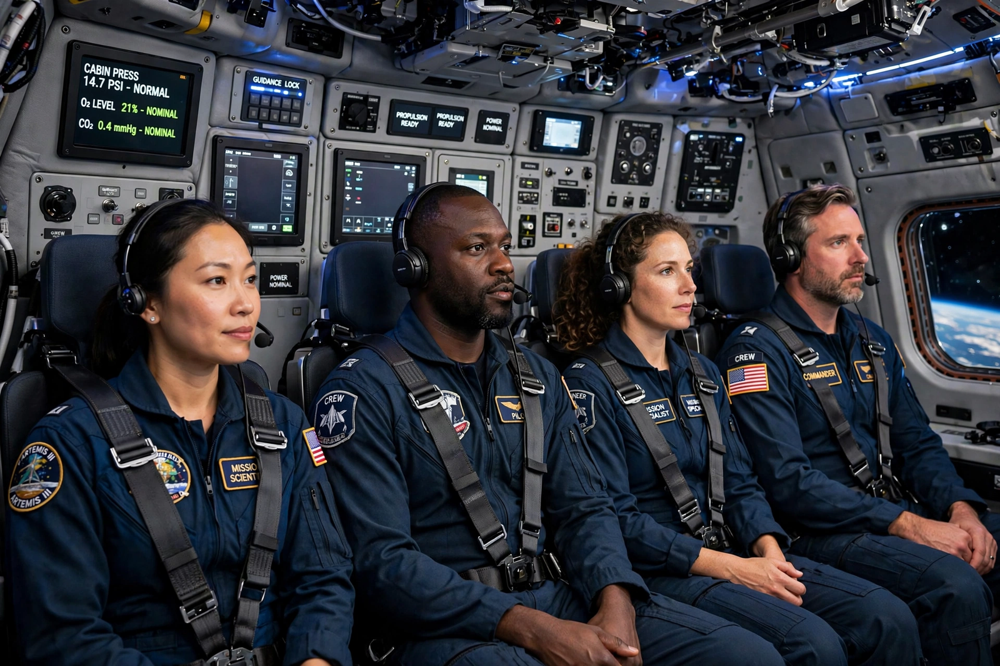

Axiom Space
From Wikipedia, the free encyclopedia
| Axiom Space | |
|---|---|
| Founded | 2016, Houston, Texas |
| Business | Private astronaut missions; commercial station modules |
| First mission | Axiom Mission 1 (April 2022) |
| Partners | SpaceX (transport), NASA |

Ax-1 crew aboard Endeavour.Axiom Space is an American space company founded in 2016 by former NASA ISS programme manager Michael Suffredini and Kam Ghaffarian, to fly private astronaut missions to the International Space Station and then build the commercial station that succeeds it. Its first mission, Ax-1 in April 2022, carried three paying customers and former NASA astronaut Michael López-Alegría to the ISS aboard a Crew Dragon — the first all-private crew to the station.
Axiom's plan is construction in reverse: its habitat modules will first attach to the ISS (first module targeted for the late 2020s), operate as a commercial wing, then detach before the station's retirement to become the free-flying Axiom Station. Ax-2 (2023) flew Peggy Whitson as commander with Saudi Arabia's first woman in space; Ax-3 (2024) was an all-European institutional crew; Ax-4 followed in 2025.
Suits too
NASA selected Axiom in 2022 to supply the lunar surface suits for the Artemis III landing — the white suits of the next Moonwalkers, styled with Prada as a design partner — making the tourism company also the maker of the most consequential garment of the decade.
See also
Space tourism · Peggy Whitson · Crew Dragon · International Space Station